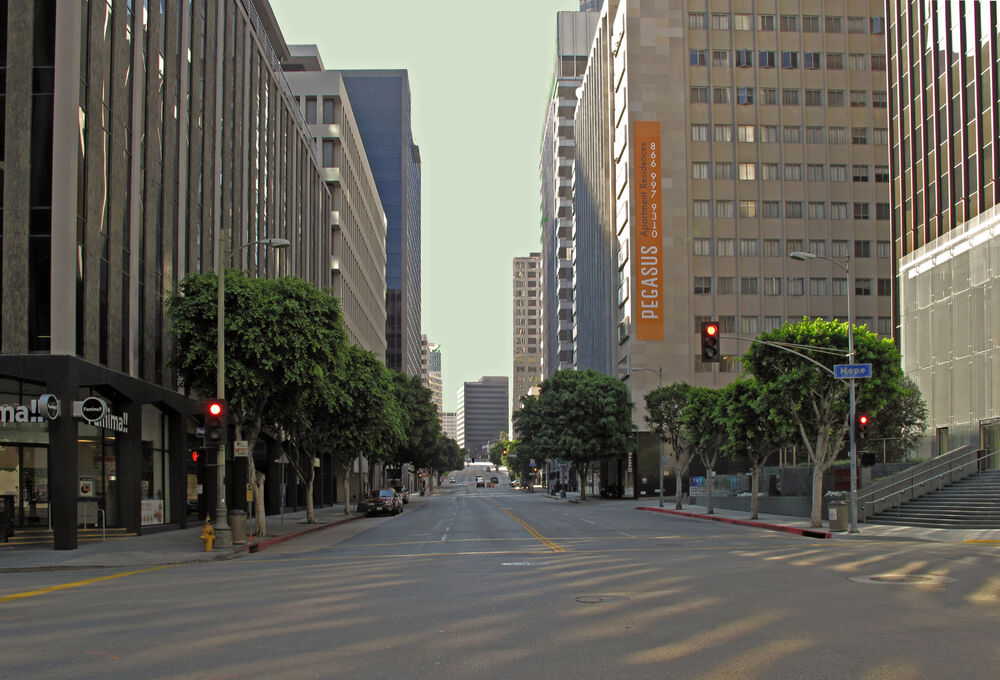
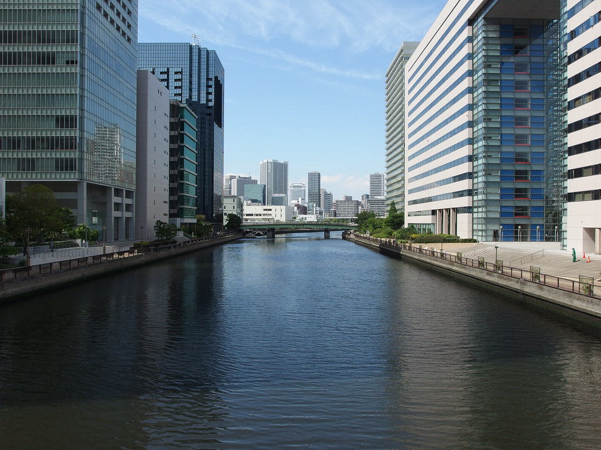

Level 11：位置、朝向、店铺与连廊 · v16
原像素放大：9 张原图／28 个局部 · 验证数据 · v15 保留报告
这是继续还原的阶段记录。功能和空间检查通过，视觉仍有明显差距；没有把摄像机相似或测试通过当成完整复刻。
- 按店门建立店铺坐标系。收银台面对顾客，双面货架沿进深排列，冷柜靠不透明后墙；玻璃转角、主通道和后门保持开放。四个朝向及旋转街区使用同一程序。
- 登记并制作双面商品陈列架、店铺收银柜台、玻璃门饮料冷柜。柜体、层板、瓶罐、POS 及门框具有真实厚度；采用已有材质，商品上没有编造的品牌或价格。当前为 30 种建筑、106 种装饰原型。
- 营业厅照明从单灯改为沿通道的灯具网格；真实光照档从街上看进角店时，只启用有实际阴影的前两盏室内灯，并服从用户更低的预算。经典档或关闭阴影时不增加外部可见的店内点光；室内仍保留原有照明。两种模式均实测 0／1／2／4 盏设置，避免隔墙漏光。
- 临街入口换为与橱窗一致的窄金属框；降低玻璃点光高光、室内照明和浅色瓷砖的明度；横招背框与深色檐口衔接，保留原有 Famima!! 文字。
- 连廊底面改为长条分板的细接缝，支承条接入两座塔楼，并补齐侧边收口。它仍是有上下表面和碰撞的完整体积，蓝色侧墙仍属于两座塔楼。
- 修复普通双塔的朝向：入口、双塔内侧、连廊和两端支承共同随临街方向转动。蓝色／深色中窗／蓝色仅在连廊下方组合，不再沿整面侧墙重复；浅色玻璃、红色细条和横向分格统一到远近模型。
先核对原像素
 11iconic：可辨认店铺、招牌、玻璃与窗下广告；未添加不存在的文字。
11iconic：可辨认店铺、招牌、玻璃与窗下广告；未添加不存在的文字。 11canal：蓝色侧墙、红色横条、连廊底面和前庭台阶。
11canal：蓝色侧墙、红色横条、连廊底面和前庭台阶。街角与反向
 固定街角：陈设、玻璃、门框和双面招牌。
固定街角：陈设、玻璃、门框和双面招牌。 沿另一方向看回店铺：标牌固定在柱和立面上。
沿另一方向看回店铺：标牌固定在柱和立面上。真实店内空间
 从后门向临街入口：货架、主通道和灯具位置。
从后门向临街入口：货架、主通道和灯具位置。 从内部向转角玻璃：仍可看见街道。
从内部向转角玻璃：仍可看见街道。 收银区近景；不可见部分属于建模补全。
收银区近景；不可见部分属于建模补全。 靠实墙的冷柜与后部通道。
靠实墙的冷柜与后部通道。连廊及整体尺度
 连廊底面细缝、支承和边缘收口。
连廊底面细缝、支承和边缘收口。 另外一个地面视角：空隙、侧墙和连廊空间关系。
另外一个地面视角：空隙、侧墙和连廊空间关系。 新增高处反向检查：连廊上表面、与塔楼连接和背面；该视角用于核对结构，并非照片机位。
新增高处反向检查：连廊上表面、与塔楼连接和背面；该视角用于核对结构，并非照片机位。
11iconic 原图 同一固定城市街景机位；整体仍有差距。
同一固定城市街景机位；整体仍有差距。
11canal 原图 同一固定运河机位；继续核对总体比例。
同一固定运河机位；继续核对总体比例。逐部位依据与限度
| 部位 | 照片可确认 | 本轮与限度 |
|---|
| 店铺两面玻璃与朝向 | 原图圆挑牌位于转角柱旁，横招沿两面店铺立面。玻璃后能看到陈列。 | 对应店门、转角玻璃、货架和招牌使用同一建筑局部坐标。 |
| 店内陈列和照明 | 照片可辨认陈列、暖色顶边和窗下广告；无法读出商品标签，也没有完整室内平面。 | 新增陈设属于合理的室内补全，不能称照片中准确品牌或平面的复原。 |
| 反向观察与入口 | 从店内向两面玻璃观察，能看见外部街道；入口须真正可通行。 | 固定原有机位，并通过完整动线验证。 |
| 收银区、柜体后部 | 照片没有展示收银设备或冷柜全貌。 | 新增近景用于验证背面、厚度、朝向和碰撞；不作为原图已存在这些设备的证据。 |
| 双塔与楼顶连廊 | 原图显示两面蓝色侧墙、红色细横条、顶部实体连接及分板底面。 | 面板、收边、蓝色组块与浅色玻璃已调整；尺寸、总体比例及不可见的屋面构造仍为推定。 |
| 连廊下方前庭 | 宽台阶接滨水步道，楼间空间保持开敞。 | 保留前庭和台阶的真实结构，使用额外斜视图核对遮挡关系。 |
普通世界和低画质
 普通种子 42 的转向店铺：使用同一配方。
普通种子 42 的转向店铺：使用同一配方。 普通种子 42 的双塔和连廊。
普通种子 42 的双塔和连廊。 低画质／经典：同一街角机位。
低画质／经典：同一街角机位。 低画质／经典：同一反向机位。
低画质／经典：同一反向机位。 低画质／经典：相同运河场景。
低画质／经典：相同运河场景。 低画质／经典：相同连廊仰视。
低画质／经典：相同连廊仰视。验证结果
静态覆盖 10 栋、33 间店铺、42 个门口连接、54647 个碰撞采样格，含四朝向及三个普通种子。双塔检查四朝向×三级模型、旋转后的顶点一致性、连廊上下碰撞与支承。实机通过 11 个固定视角、店铺动线、柜台下落、店门双向、办公室楼梯与房门、普通种子店铺／双塔、拱桥／桥墩和岸道检查。低画质经典光照另测四个店铺／运河机位及相同店内动线。最终灯光保护另跑真实光照街角机位；两种模式均通过 0／1／2／4 盏阴影预算和隔墙熄灯检查。运行错误均为 0；网络异常保留在 runtime.json。
Chrome/155.0.8059.40；ANGLE (NVIDIA, NVIDIA GeForce RTX 4060 Laptop GPU (0x000028E0) Direct3D11 vs_5_0 ps_5_0, D3D11)。1080p 固定种子 20261014，新游戏种子 20259573。移动帧时中位 16.6ms，P95 33.4ms，最长 329.2ms；采样末 420 次绘制、2356488 三角形。
三次重载：几何 1935/1935/1935；非角色池纹理 80/80/80。这些是资源计数，不是显存字节。
每次 QA 使用真实 --headless=new、独立端口及 profile。进程、监听端口和目录清理由只读检查复核。首轮 draft 记录 保留；其店内过亮、木框问题已在当前图中修正。
仍待还原
- 没有达到“几乎完全一致”。原图中的低窗广告图案、细小文字、商品包装和室内实际平面仍无法完整确认；未擅自补写文字，也未把新增陈设当成准确复原。
- 当前商品仍偏简化、重复，货架层数与陈列密度仍须和窗内原像素继续比较。招牌字的立体厚度、玻璃反射、门边细节仍有差异。
- 双塔侧墙的蓝色分格数量与宽度、连廊长宽和屋面构造、建筑总体比例与参考照片仍有差异。面板、支承和室内尺寸均为单张图片推定。
- 整体街景的纵深、路面材质、树冠和日照仍需继续收敛。其他七张参考图的逐项记录保留，尚未全部完成最终实机还原。
- 本轮验证固定种子和已列场景，性能数据来自实际浏览器和 GPU，不代表所有城市、所有硬件稳定 60 FPS。
可复跑命令
npm run build
npm run check:l11
npm run check:l11-retail
npm run check:l11-twins
npm run check:l11-meshes
npm run check:l11-reference
npm run check:l11-props
npm run check:l11-architecture
node scripts/verify-l11-reference.mjs --label=retail-v16-final --case=01,03,14,15,16,30,31,33,45,46,47 --validate=west-piers --rooms --architecture --random-cases=retail,twins --retail --lifecycle
node scripts/verify-l11-reference.mjs --label=retail-v16-low-classic --case=03,14,30,31 --low --classic --visual-only --retail
node scripts/verify-l11-reference.mjs --label=retail-v16-shadow-budget --case=14 --visual-only --retail
& ./scripts/check-l11-qa-cleanup.ps1 -Labels @('retail-v16-draft','retail-v16-verified','retail-v16-final','retail-v16-low-classic','retail-v16-shadow-budget')
node scripts/summarize-l11-retail.mjs